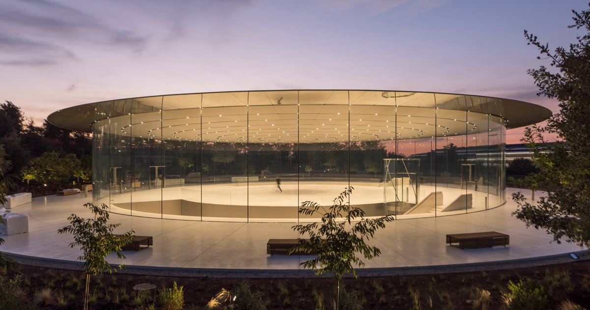
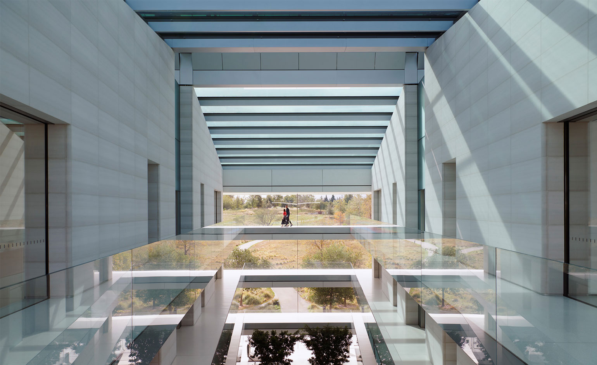

Key Campus Features
The Steve Jobs Theater
Situated atop a small hill overlooking the campus, the Steve Jobs Theater is an underground auditorium used for Apple's product launch events and special presentations. Its iconic glass cylinder lobby and carbon fiber roof are the only parts visible above ground.
The theater embodies simplicity and elegance in design, mirroring the philosophy behind Apple's products and the campus itself. It can seat 1,000 people and features state-of-the-art audiovisual technology.
Innovative Workspaces
Inside the Ring and other campus buildings, workspaces are designed to be flexible and promote collaboration. Large, open areas are interspersed with smaller, private "pods" for focused work. Natural light floods the interiors, and views of the parkland are abundant.
Expansive Green Spaces & Amenities
Beyond the main Ring, the campus includes a 100,000-square-foot fitness and wellness center for employees, research and development facilities, and miles of walking and jogging paths. The extensive parklands feature orchards, meadows, and a pond, creating a serene environment.